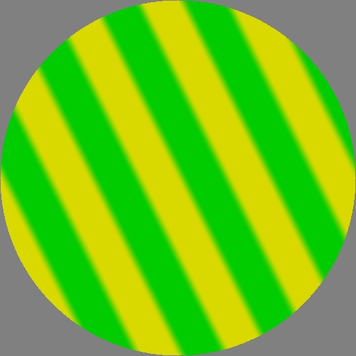

...
January
1, 2020
Grating
The Grating generator creates a swept stripe pattern whose
cross-sectional “slice” is a periodic waveform selectable between a sine
wave and a square wave. The parameters to Grating include: two
positions, endpoints of a segment defining the orientation and spacing
(wavelength) of the stripe pattern — two Colors for the striped pattern
— and a softness parameter were 0 means square wave and 1 means sine
wave.
Grating(Vec2(0.1, 0.1), Color(0, 0.8, 0),
Vec2(0.5, 0.3), Color(1, 1, 0),
0.3);

December
30, 2019
“First light” and the Spot operator
These are the first textures displayed by TexSyn
captured as screen shots. They show the result of the Spot
texture generator. The first one was tiny and was missing its center
constant-color region. The OpenCV utility cv::imshow()
is used to rasterize and display the procedural texture. The first image
used a 24 bit (three 8 bit unsigned integers) RGB representation, called
CV_8UC3 in OpenCV. A bug caused “full
brightness” colors to wrap around to zero, causing the black center. I
fixed the bug and switched to an image format with three 32 bit floating
point number per stored pixel (CV_32FC3). Later I may
switch to four channel images to accommodate alpha matting.
TexSyn's Texture class supports
arbitrary resolution—so there is no static storage of pixels—all color
values are computed procedurally “on the fly” represented as three
32-bit floating point values. The OpenCV images (cv::mat
class) are used only at the output end, before displaying a texture on
the screen, or writing it to an image file.
The Spot Texture is defined as being centered at the origin,
having an inner radius of 0.2 and an inner color of white. It outer
radius is 0.6 and outer color is black. Between 0.2 and 0.6 there is a
soft sinusoidal transition between the inner and outer colors:
Spot(Vec2(0, 0),
0.2, Color(1, 1, 1),
0.6, Color(0, 0, 0));


December
29, 2019
Infrastructure
From December 15 through December 28 the basic infrastructure was
constructed. This included:
- Basic
c++ classes for Texsyn:
Texture (base class for all types of textures)
Generator (creates a texture from primitive values)Operator (combines one or more input textures (and
primitive values) to produce a new texture)
- Primitive values to parameter textures:
Vec2 (a position on the infinite 2D texture plane)Color (very generalized representation of a point
in color space, defined as RGB values over the entire floating
point range. During texture composition, these values range over
[-∞, +∞] but are clipped to [0, 1] for display. Includes
conversion to hue/saturation/value color space and luminance.)
- A Utilities package to support interpolation,
clipping, remapping, randomization, and noise.
- A suite of unit tests to verify the correct
operation of primitives, texture generators, and operators.
- An interface to the OpenCV library to provide:
- Basic utilities such as displaying rasterized textures in windows
on the screen, and writing them to standard image file formats.
- Eventually help with implementing some operators, and particularly
to provide access to acceleration on GPU or other hardware.
For more details, see the code
and the git
commit history.
December
15, 2019
A new library
Today I created a new repository on GitHub called Texsyn,
part of a project about adversarial evolutionary texture synthesis.
TexSyn is a library for procedural texture synthesis.
It is intended for use by a genetic programming (“GP”) system,
a type of genetic algorithm. The GP system performs simulated
evolution on a population of individual programs,
according to a fitness function (also known as a fitness
metric, utility function, or a loss function
in machine learning.) In this application to texture synthesis, the
programs are compositions of functions from the TexSyn
library. When executed they describe a color texture, an image.
This is a re-implementation and update to the TextureSynthesisTest
library as described in Texture
Synthesis Diary and used as the basis of the 2011 paper Interactive
Evolution of Camouflage.
Page and the software it describes by Craig
Reynolds